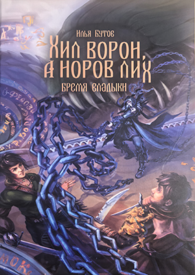
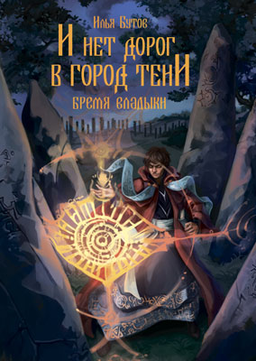
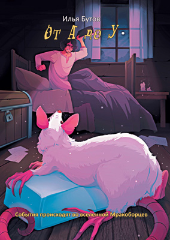
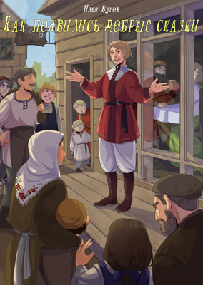
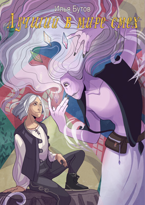
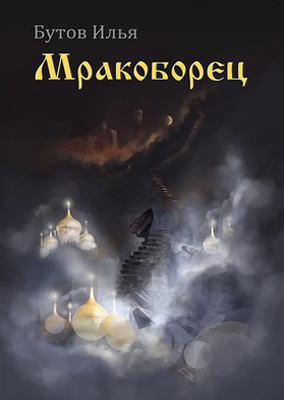
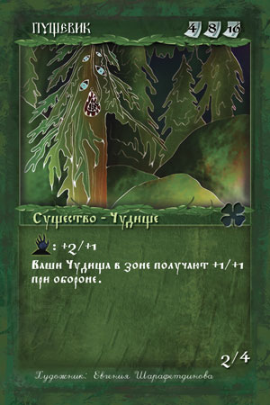

Автор: admin
-
Хил ворон, а норов лих

Вторая душа — тяжкое бремя, подарок, от которого нельзя просто так отказаться, и клеймо, что открывает двери, в которые лучше не входить. А ведь именно […]
-
И нет дорог в город тени

В эту страну просачивается тьма. Пока по капельке, понемножечку, исподволь завладевает она умами, сердцами и душами людей. У Владыки этой страны есть лишь три дня, […]
-
От А до У

Обычная работа счетовода – лишь исписывать тетради малопонятными цифрами и перекладывать бумажки из одной стопки в другую. Но если он волей-неволей окажется в центре чьего-то […]
-
Как появились добрые сказки

Сейчас существование сказок для нас нечто само собой разумеющееся. Но были времена, когда никто даже не подозревал, что такое сказки и какие они должны быть. […]
-
Лучший в мире смех

Перед вами первая из серии книг цикла «Сказки Мракоборцев» – нескольких небольших историй, написанных в жанре юмористической сказки. Их действие происходит во Вселенной Мракоборцев – […]
-
Мракоборец

Где-то на окраине этой страны затерян небольшой невзрачный Портал. Говорили, что в нем сокрыты ответы на многие вопросы, ответы на которые ведает лишь Владыка. Однако […]
-
Пущевик

Пущевики – территориально привязанные к определенным местообитаниям гигантские деревья. Высокий рост помогает пущевику обозревать окрестности, однако зрение у него ни к черту и делается это […]
-
Белая дева

Белая дева – знахарка, специализирующаяся на волшебных экспериментах, связанных с мифрилом. Так как ведьмой может стать лишь первая или последняя девочка у потомственной служительницы темным […]
-
Травница

Травница – знахарка, живущая в лесу. Кропотливым трудом в области ежедневной заготовки и комбинирования различных травосмесей, направленных на помощь всем окружающим обитателям глухих лесных окраин, […]
-
Баган

Баган – назначенный наместником надсмотрщик за чудищами, знахарь. Баган с самого рождения живет в хлеву и постигает повадки животных, после чего перебирается в лес, где […]
-
Ичетик

Ичетик – чудище-командир, назначенное лично Великим дубом. Это мохнатое, похожее на волосатую водяную змею существо, начинало с самой грязной работы в мире – прислуживания водяным […]
-
Кикимора

Кикимора – дух, родившийся от порочной связи некоторых детей с огненным змеем. Как известно, после смерти человека его душа в виде огненного змея летит через […]
-
Волчий пастырь

Волчий пастырь – назначенный Стражем чащи предводитель некоторых отрядов существ Детей леса. Этот дух может перевоплощаться или в козлоногого белобородого старика верхом на волке или […]
-
Кот-баюн

Кот-баюн – мощный атакующий персонаж Детей леса, чудище лесное. Коты стали настоящей находкой не только для нечистоплотных хозяев, страдающих от крыс, но и для знахарей, […]
-
Зверь-Индр

Зверь-Индр – редкий, полумифический обитатель лесов. Из-за очень ценного рогового выроста, являющегося излюбленным охотничьим трофеем, это парнокопытное стало вымирающим видом, тогда как на иллюстрациях в […]
-
Кошкалачень

Кошкалачень – один из видов оборотней, населяющих страну. Эти примкнувшие к Детям леса больные гататропией люди отнюдь не агрессивны и, как правило, предпочитают в ночное […]
-
Водяна

Водяны – духи водной среды, обитающие в отличие от мавок и болотянников в чистых проточных водоемах. Появляются, как правило, в виде женской ипостаси, однако могут […]
-
Мавка

Мавка – дух, обитающий в озерах возле вытекающих из них рек. Чаще всего живет возле мельницы. В связи с чрезвычайной распространенностью этого вида сооружений, популяция […]